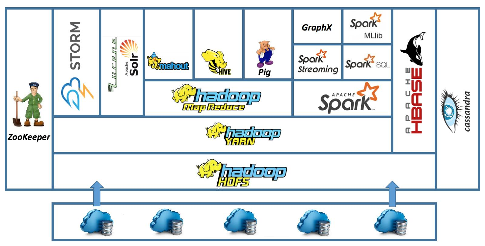
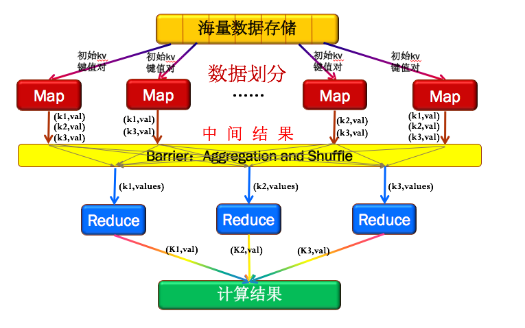
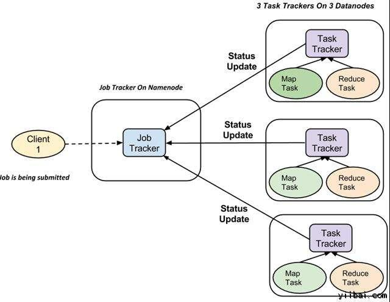

分布式计算平台（框架）和运行在平台之上的应用层模块相互协作完成一个完整的分布式计算任务。
平台的作用（6项）：
应用层模块的作用：专注于实现框架要求下和具体应用层逻辑相关的子任务计算逻辑。
MapReduce 将大数据并行计算任务划分为三个阶段：
三个键值数组的转换关系：
要点：通过 Map 子任务输出的 key 值部分控制不同子任务输出结果的相互交换和聚集。
<target, list(source)>HDFS输入文件
│
▼
把输入文件划分为多个输入分片 (Split)
│
▼
从输入分片中解析出多个 K-V 对
│
▼
针对每个 K-V 对调用一次 Map 方法 ← Map阶段（第一阶段并行）
│
▼
对 Map 输出的 K-V 对按 Key 二次分区
│
▼
对每个二次分区中的数据按 Key 排序
│
▼
对二次分片中的数据按 Key 局部聚合 ← Shuffle/Combine阶段
│
▼
存入 HDFS 临时文件
│
▼
Reduce 任务从不同 Map 节点拉取数据
│
▼
将来自不同 Map 节点的数据合并排序
│
▼
针对二次分片中每个 K-V 调用一次 Reduce 方法 ← Reduce阶段（第二阶段并行）
│
▼
HDFS 输出文件
图1：MapReduce 三阶段并行计算工作流程

图2：MapReduce 完整工作流程
输入分片（Split）：平台将输入文件分片。分片大小、方式可定制，默认按 HDFS 分块大小（Block Size，通常 64MB/128MB）分片。
读取行记录：平台针对每个分片创建一个 Map 子任务。Map 子任务从文件分片中以"行记录"的形式逐条读取。文件分片中数据组织成行记录的方式可定制，默认遇到换行符 \n 为一行。
生成键值对：默认将行记录规整为行号作为 Key，行内容作为 Value 的形式。
调用 map 方法：每读入一条记录，就调用一次 Mapper 对象的 map 方法。Map 子任务根据具体计算需求输出一个或多个 (key, value) 对。输出中 key、value 的格式、类型和内容由 Map 程序自己决定。
(key, value) 数组。平台将 Map Task 中间计算结果进行二次分片。二次分片逻辑可定制，默认方式是将 key 值取 Hash 然后模除 Reduce Task 节点数。$\text{Partition}(key) = H(key) \bmod R$
其中 $R$ 为 Reduce Task 的数量。
分片内排序（Sort）：框架将每个二次分片内的 <key, value> 数组进行分片内排序。
局部聚合（Combine）：框架将每个二次分片内的元素按 key 值进行局部聚合。局部聚合处理逻辑可通过 Combiner 对象定制。默认逻辑是将 <k1, v1>、<k1, v2>、<k1, v3>... 聚合成 <k1, [v1, v2, v3]>。
暂存 HDFS：经过排序和局部聚合之后的二次分片数据被暂存入 HDFS。

图3：MapReduce Shuffle/Sort 阶段详解
框架针对用户对 Reduce Task 数目的设定创建 n 个 Reduce Task。设定方法：
conf.setNumReduceTasks(int n)
框架将每个二次分片分发给一个 Reduce Task。
Reduce Task 从二次分片每取出一条 (key, <v1, v2, v3...>) 形式的记录，就调用一次 Reducer 对象的 reduce 方法，该方法生成最终结果。
如果 Reduce 阶段输出不是最终结果，还可以以输出数组为输入启动新一轮 MapReduce 过程。
Combiner 是一个可选的本地优化阶段，在 Map 端对中间结果进行局部归约以减少网络传输量。
形式化定义：
map: (K1, V1) → list(K2, V2)combine: (K2, list(V2)) → list(K3, V3)reduce: (K3, list(V3)) → list(K4, V4)Combiner 的使用条件：Combiner 的逻辑必须和 Reducer 兼容（通常是同一个类），适用于满足结合律和交换律的操作（如求和、计数、最大值），但不适用于求平均值等需要全局信息的操作（除非 Combine 阶段输出 sum 和 count）。
一个完整的 MapReduce 程序由以下类组成：
map 方法，签名 (K1, V1) → list(K2, V2)reduce 方法，签名 (K3, list(V3)) → list(K4, V4)reduce 方法，签名 (K2, list(V2)) → list(K3, V3)问题：统计一组文本文件中每个单词出现的次数。
Map 阶段伪代码：
// 输入: (行号, 行内容)
// 输出: (单词, 1)
map(LongWritable key, Text value):
line = value.toString()
for each word in line.split():
context.write(new Text(word), new IntWritable(1))
Reduce 阶段伪代码：
// 输入: (单词, [1, 1, 1, ...])
// 输出: (单词, 总计数)
reduce(Text key, Iterable<IntWritable> values):
sum = 0
for each val in values:
sum += val.get()
context.write(key, new IntWritable(sum))
Combiner：可直接复用 Reducer 类，在 Map 端对相同 key 先做局部求和，减少 Shuffle 数据量。
问题：从海量数据中找出最大的 N 个值（如统计词频最高的 N 个单词）。
Map 阶段：每个 Map Task 在本地的数据分片中找出 TopN，只输出这 N 条记录。
// 每个 Map Task 维护一个大小为 N 的小顶堆
map(key, value):
将 (key, value) 插入本地的小顶堆（容量为 N）
如果堆大小超过 N，弹出堆顶（最小值）
// Map Task 的 cleanup 方法中输出堆中的 TopN
cleanup():
for each item in heap:
context.write(item.key, item.value)
Combine 阶段：逻辑与 Map 阶段的 cleanup 相同，在多个 TopN 的并集中再次选出 TopN。
combine(key, values):
维护一个大小为 N 的小顶堆
for each value in values:
将 value 插入堆
如果堆大小超过 N，弹出堆顶
for each item in heap:
context.write(item.key, item.value)
Reduce 阶段：将来自所有 Map 的候选 TopN 进行最终合并，选出全局 TopN。
reduce(key, values):
维护一个大小为 N 的小顶堆
for each value in values:
将 value 插入堆
如果堆大小超过 N，弹出堆顶
for each item in heap:
context.write(item.key, item.value)
关键思想：Map 端和 Combine 端都进行局部筛选，大幅减少要传输的数据量。每个 Map 只输出 N 条记录，最后 Reduce 在至多 $M \times N$ 条（M 为 Map Task 数）候选中选出全局 TopN。
<ID1, ID2> 关系型数据）问题：输入每行 <ID1, ID2> 表示 ID1 关注了 ID2（ID1 是 ID2 的粉丝）。统计每个用户的粉丝数量和粉丝列表。
核心思想：将关注关系"翻转"，以被关注者（ID2）为 key，关注者（ID1）为 value。
Map 阶段：
// 输入: (行号, "ID1, ID2")
// 输出: (ID2, ID1) —— 注意 key 是被关注者
map(LongWritable key, Text value):
tokens = value.toString().split(",")
follower = tokens[0].trim() // ID1（粉丝）
followee = tokens[1].trim() // ID2（被关注者）
context.write(new Text(followee), new Text(follower))
Reduce 阶段：
// 输入: (被关注者ID, [粉丝ID1, 粉丝ID2, ...])
// 输出: (被关注者ID, 粉丝数量 + 粉丝列表)
reduce(Text key, Iterable<Text> values):
count = 0
followerList = []
for each val in values:
count++
followerList.add(val.toString())
output = "粉丝数量: " + count + ", 粉丝列表: " + followerList
context.write(key, new Text(output))
问题：输入每行 <parent, child>，输出所有 <grandparent, grandchild> 关系。
思路：需要两轮 MapReduce。
第一轮：构建 child-parent 映射。
- Map：输出 (child, parent) —— 以 child 为 key
- Reduce：收集每个 child 的所有 parent
第二轮：构建 grandchild-grandparent。
- Map：对每条 <parent, child> 记录，以 parent 为 key 去连接第一轮的 child-parent 映射（parent 是第一轮中的 child），输出 (grandchild, grandparent)
- Reduce：归并结果
输入格式：班级, 姓名, 科目, 必修/选修, 成绩
问题1：计算每个学生必修课的平均成绩。
// Map阶段
map(LongWritable key, Text value):
tokens = value.toString().split(",")
className = tokens[0].trim()
name = tokens[1].trim()
subject = tokens[2].trim()
type = tokens[3].trim()
score = Float.parseFloat(tokens[4].trim())
if type.equals("必修"):
// key = 姓名, value = 成绩
context.write(new Text(name), new FloatWritable(score))
// Reduce阶段
reduce(Text key, Iterable<FloatWritable> values):
sum = 0.0
count = 0
for each val in values:
sum += val.get()
count++
avg = sum / count
context.write(key, new Text("必修课平均成绩: " + avg))
问题2：按科目统计每个班的平均成绩。
// Map阶段
map(LongWritable key, Text value):
tokens = value.toString().split(",")
className = tokens[0].trim()
subject = tokens[2].trim()
score = Float.parseFloat(tokens[4].trim())
// key = 科目 + 班级（复合键）, value = 成绩
compositeKey = subject + "\t" + className
context.write(new Text(compositeKey), new FloatWritable(score))
// Reduce阶段
reduce(Text key, Iterable<FloatWritable> values):
sum = 0.0
count = 0
for each val in values:
sum += val.get()
count++
avg = sum / count
// 解析复合键
parts = key.toString().split("\t")
output = "科目: " + parts[0] + ", 班级: " + parts[1] + ", 平均分: " + avg
context.write(key, new Text(output))
HDFS（Hadoop Distributed File System）是面向大数据的开源分布式文件系统，将分布式系统中多个节点的存储资源整合在一起，向用户/应用程序呈现统一的存储空间和文件系统目录树。用户无需关心数据存储在哪个节点上。

图4：HDFS 分布式文件系统架构
NameNode（主节点）： - 存储文件系统的元数据（目录信息、文件名、每个文件由哪些分块组成、Block 到 DataNode 的映射关系等）。 - 管理数据节点（DataNode 的注册、心跳监控）。 - 负责多副本维护和存储负载均衡。 - 处理客户端请求的控制流（文件打开、关闭、重命名等）。
DataNode（从节点）： - 负责存储每个文件的实体数据（文件的分块数据/Block 数据）。 - 处理客户端的数据流读写请求。 - 定期向 NameNode 发送心跳和 Block 报告。 - 根据 NameNode 指令进行 Block 的复制、删除等。
架构关系： - 控制流：客户端 → NameNode（元数据操作） - 数据流：客户端 → DataNode（实际数据读写） - NameNode 向 DataNode 发送管理指令（多副本维护、负载均衡）
图5：HDFS 架构 — NameNode 与 DataNode 主/从模式
关键点：NameNode 不参与实际数据传输，只负责元数据查询；数据直接在客户端与 DataNode 之间传输。
HDFS 通过以下技术提高数据存储的可靠性：
NameNode 持续监控 Block 副本数，发现副本不足时自动触发复制。
机架感知（Rack Awareness）：
目的：同时考虑写带宽（同机架传输快）和容错性（跨机架防止单点故障）。
心跳机制（Heartbeat）：
如果 NameNode 超过一定时间（默认10分钟）未收到某 DataNode 心跳，则标记该节点为失效，并触发该节点上所有 Block 的补充复制。
安全模式（Safe Mode）：
NameNode 启动后自动进入安全模式，等待各 DataNode 上报 Block 信息，确认数据完整性后才退出。
校验和（Checksum）：
HDFS 在写入时为每个 Block 计算校验和，读取时验证校验和以检测数据损坏。
元数据持久化：
为什么 HDFS 不适合存储大量小文件？
NameNode 内存压力：每个文件、目录、Block 的元数据（约 150 字节/条目）都存储在 NameNode 的内存中。大量小文件意味着大量的元数据条目，会耗尽 NameNode 的内存资源。
MapReduce 效率低：MapReduce 默认每个文件分片对应一个 Map Task。大量小文件会产生大量 Map Task（远超过实际数据量需要的任务数），Map Task 的创建和调度开销远大于数据处理本身。
寻道时间大于传输时间：每个 Block 的读取需要磁盘寻道，小文件场景下寻道时间占比大。
解决方案：使用 SequenceFile、HAR（Hadoop Archive）或 Parquet/ORC 等列存格式将小文件合并为大文件。
| 对比维度 | MapReduce | Spark |
|---|---|---|
| 计算模型 | 基于磁盘的批处理，Map → Shuffle → Reduce | 基于内存的 DAG 计算，RDD 转换与动作 |
| 中间结果存储 | 写入 HDFS 磁盘 | 优先存储在内存中 |
| 速度 | 较慢（磁盘 I/O 开销大） | 快（内存计算，MapReduce 的 10-100 倍） |
| 适用场景 | 一次性大规模批处理 | 迭代计算、交互式查询、流处理 |
| 编程模型 | 仅 Map 和 Reduce 两个算子 | 丰富的 Transformation 和 Action 算子 |
| 容错机制 | 通过重新执行失败 Task | 通过 RDD 的 Lineage（血缘）重新计算 |
| 语言支持 | 主要 Java | Java, Scala, Python, R |
图7：MapReduce（磁盘中间结果）vs Spark（内存RDD计算）
RDD（Resilient Distributed Dataset，弹性分布式数据集）是 Spark 的核心数据抽象：
两种操作类型：
map、filter、flatMap、reduceByKey、groupByKey、sortByKey、join 等。惰性求值，不立即执行。count、collect、reduce、saveAsTextFile、foreach 等。典型伪代码模板：
// 1. 创建 SparkContext
sc = new SparkContext(conf)
// 2. 从 HDFS 读取数据创建 RDD
rdd = sc.textFile("hdfs://input/path")
// 3. Transformation 链
result = rdd.map(...) // 映射转换
.filter(...) // 过滤
.flatMap(...) // 扁平映射
.reduceByKey(...)// 按键归约
.sortByKey() // 按键排序
// 4. Action 触发计算
result.saveAsTextFile("hdfs://output/path")
基本原理：对数据记录的主键（key）计算哈希值 $h = H(key)$，然后对服务器数量 $N$ 取模，得到存储该记录的服务器编号：
$\text{ServerID} = H(key) \bmod N$
哈希函数要求： - 均匀分布：尽量使数据均匀分布在各节点上。 - 确定性：相同的 key 总是映射到同一个节点。
优点： - 实现简单，算法复杂度 $O(1)$。 - 数据分布均匀（假设好的哈希函数）。
缺点： - 增加或删除节点时，大部分数据需要重新分布（重新取模）。当 $N$ 变化时，$\bmod N$ 的结果对大部分 key 都会改变，导致大量数据迁移。
基本概念： - 将哈希函数的输出值范围映射到一个环形空间（Hash Ring），通常为 $[0, 2^{m}-1]$（如 $[0, 2^{32}-1]$）。 - 每个服务器节点根据其标识的哈希值映射到环上的一个点。 - 每个数据记录（key）根据其哈希值映射到环上的一个点。 - 数据记录的存储规则：在环上顺时针查找第一个遇到的服务器节点，将数据存储在该节点上。
数据分布确定方法： 1. 计算各服务器标识的哈希值，确定在环上的位置。 2. 计算各数据记录的哈希值，确定在环上的位置。 3. 每个数据记录顺时针遇到的第一个服务器节点即为存储节点。 4. 每台服务器存储从当前节点逆时针到上一节点之间的所有数据记录。
优点： - 增加或删除节点时，只影响环上相邻节点的数据分布，数据迁移量大幅减少。 - 当增加节点时，只有顺时针方向下一个节点需要将部分数据迁移到新节点。 - 当删除节点时，只有被删除节点上的数据需要迁移到顺时针方向下一个节点。
缺点： - 数据分布可能不均匀（节点在环上的位置不均匀导致部分节点存储更多数据）。 - 解决方法：引入虚拟节点（Virtual Nodes），每个物理节点映射多个虚拟节点到环上。
图8：一致性哈希环 — 节点与数据在环形空间的分布
哈希取模法的数据迁移量： - 从 $N$ 台服务器扩展到 $N+1$ 台，约 $\frac{N}{N+1}$ 的数据需要移动（即大部分数据）。 - 具体公式：迁移比例约为 $1 - \frac{1}{N+1}$。
一致性哈希的数据迁移量： - 只移动新节点与其顺时针方向下一个节点之间的数据。 - 理论上约为总数据的 $\frac{1}{N+1}$（假设数据均匀分布）。但实际上取决于数据在环上的分布。
Docker 是一种轻量级虚拟化技术，与传统的虚拟机不同：
与虚拟机的区别：容器共享宿主机的操作系统内核，启动快、资源开销小，而虚拟机需要完整的 Guest OS。
容器编排调度系统的功能（分布式系统的 OS）： - 分发容器镜像 - 按需启动、关停容器 - 按需迁移容器 - 资源调度（存储、网络） - 负载均衡 - 自动扩容、缩容 - 自动故障恢复
常见工具：Docker Compose（单机编排）、Kubernetes（集群编排）。
环境组成： - HDFS 集群：NameNode + 多个 DataNode - YARN 集群：Resource Manager + 多个 Node Manager - Client Node：用于提交 MapReduce/Spark 任务 - 监控集群：MapReduce History Server + Spark History Server - Web Server
以上组件均以 Docker 容器形式运行在同一子网内。
基本操作流程：
# 1. 启动实验环境
cd /path/to/hadoop-sandbox
docker-compose up -d
# 2. SSH 登录到 Client Node
ssh -p 2222 sandbox@localhost
# 密码：sandbox
# 3. 配置 Maven 环境变量
echo 'export MAVEN_HOME=/home/sandbox/shared/maven' >> ~/.bashrc
echo 'export PATH=$MAVEN_HOME/bin:$PATH' >> ~/.bashrc
source ~/.bashrc
# 4. 关闭实验环境
docker-compose down
HDFS 常用命令：
| 命令 | 功能 |
|---|---|
hadoop fs -ls |
显示当前用户目录下的文件和目录 |
hadoop fs -mkdir test |
创建子目录（加 -p 创建多级目录） |
hadoop fs -put input.txt test |
上传本地文件到 HDFS |
hadoop fs -cat input.txt |
查看 HDFS 中文件内容 |
hadoop fs -rm input.txt |
删除文件 |
hadoop fs -rm -r test |
删除子目录（需加 -r） |
hadoop fs -cp URI dest |
复制系统内文件 |
hadoop fs -get src localdst |
下载文件到本地 |
hadoop fs -mv URI dest |
移动文件 |
hadoop fs -du URI |
显示文件大小 |
Web 监控服务：
- HDFS 监控：http://localhost:9870/
- MapReduce Job History：http://localhost:19888/jobhistory
- Hadoop 集群状态：http://localhost:8080/
运行自定义程序：
1. 将程序/工程目录存放在 hadoop-sandbox/shared 目录下。
2. 通过 SSH 登录 Client Node，使用 Maven 编译和运行。
原题： 1. HDFS 的 NameNode 节点和 DataNode 节点的主要功能分别是什么？（4分） 2. 简述客户端读取一个 HDFS 文件时与 NameNode 节点和 DataNode 节点的交互过程。（4分）
解析/答案：
NameNode 的主要功能： - 存储文件系统的元数据（目录结构、文件名、每个文件由哪些 Block 组成、Block 与 DataNode 的映射关系等）。 - 管理 DataNode（注册、心跳监控、存活检测）。 - 负责多副本的维护和存储负载均衡。 - 处理客户端的控制流请求（打开、关闭、重命名文件等元数据操作）。
DataNode 的主要功能： - 存储文件的实际数据块（Block 数据）。 - 处理客户端的数据流读写请求。 - 定期（默认 3 秒）向 NameNode 发送心跳信号和 Block 报告。 - 根据 NameNode 的指令执行 Block 的复制、删除等操作。
客户端读取 HDFS 文件的交互过程： 1. 客户端向 NameNode 发送文件读取请求，提供文件路径。 2. NameNode 查询元数据，返回该文件的所有 Block 列表以及每个 Block 所在的 DataNode 地址列表（按网络距离排序，优先返回最近的 DataNode）。 3. 客户端从返回的 DataNode 列表中选择最近的 DataNode，直接建立连接读取第一个 Block 的数据。 4. 依次读取后续每个 Block，直到文件所有 Block 读取完成。 5. 若某个 DataNode 读取失败，客户端自动尝试备选 DataNode 列表中的下一个节点。 6. 客户端将各 Block 数据拼接成完整文件。
关键点：NameNode 只参与控制流（返回元数据），不参与数据流传输；数据在客户端和 DataNode 之间直接传输，实现高吞吐。
原题： 为了提高数据存储的可靠性，HDFS 在设计上采取了哪些技术措施？（至少给出 2 种）（4分）
解析/答案：
多副本机制（Replication）：每个数据 Block 默认保存 3 个副本，存储在不同的 DataNode 上（通常分布在不同机架）。当某个节点故障导致副本丢失时，NameNode 检测到副本数不足后会自动触发补充复制。
机架感知策略（Rack Awareness）：副本放置时考虑物理机架分布。典型策略为：第一副本放在写入节点（或随机），第二副本放同机架另一节点，第三副本放不同机架节点。这样可以同时兼顾写效率（同机架数据传输快）和容错（不同机架之间冗余）。
心跳机制（Heartbeat）：DataNode 定期向 NameNode 发送心跳信号，若超时未收到则 NameNode 标记该 DataNode 为失效，并自动触发该节点上所有 Block 的重新复制。
安全模式（Safe Mode）：NameNode 启动后进入安全模式，等待各 DataNode 上报 Block 信息，确认数据完整性后才退出安全模式允许客户端写入。
元数据持久化与备份：通过 FsImage 和 EditLog 持久化元数据，并可通过 Secondary NameNode 或 Standby NameNode 进行备份。
原题： 为什么 HDFS 不适合存储大量的小文件？（2分）
解析/答案：
NameNode 内存压力：每个文件/目录/Block 的元数据（约 150 字节）都存储在 NameNode 的内存中。大量小文件意味着海量元数据条目，会耗尽 NameNode 有限的内存资源，导致系统无法扩展。
MapReduce 计算效率低：MapReduce 默认每个文件分片对应一个 Map Task，大量小文件会产生大量 Map Task，而 Task 的创建和调度开销远大于实际数据处理开销，造成资源浪费。
磁盘寻道开销大：每个 Block 读取需要磁盘寻道，大量小文件导致寻道时间远大于数据传输时间，降低了系统吞吐量。
原题： 假设某分布式数据库系统根据新插入数据记录的主键（key）选择不同的服务器节点存储该记录，共有 N 个存储服务器，标识号分别为 $ID_1, ID_2, \ldots, ID_N$。另外假定存在理想的无碰撞哈希函数 $H$，能够将任意的字符串转化为 5 bit 的正整数，$H$ 的输出结果在区间 $[0, 31]$ 上均匀分布。向该数据库共插入了 10 条记录，这 10 条记录的主键的哈希值分别为 $1, 3, 5, 9, 14, 15, 19, 21, 26, 31$。
(1) 假定用以下策略选择具体的存储服务器：计算 $i = H(key) \bmod N$，其中 mod 表示取余运算，然后将当前记录存储在服务器 $ID_{i+1}$ 中。初始时 $N = 3$，当增加一个服务器 $ID_4$ 时会有多少条数据记录需要在不同服务器节点间移动？给出计算过程。（4分）
解析/答案：
第一步：计算 N=3 时每条记录的存储位置
$i = H(key) \bmod 3$
| 记录哈希值 | 计算 $H \bmod 3$ | $i+1$ | 存储服务器 |
|---|---|---|---|
| 1 | $1 \bmod 3 = 1$ | 2 | $ID_2$ |
| 3 | $3 \bmod 3 = 0$ | 1 | $ID_1$ |
| 5 | $5 \bmod 3 = 2$ | 3 | $ID_3$ |
| 9 | $9 \bmod 3 = 0$ | 1 | $ID_1$ |
| 14 | $14 \bmod 3 = 2$ | 3 | $ID_3$ |
| 15 | $15 \bmod 3 = 0$ | 1 | $ID_1$ |
| 19 | $19 \bmod 3 = 1$ | 2 | $ID_2$ |
| 21 | $21 \bmod 3 = 0$ | 1 | $ID_1$ |
| 26 | $26 \bmod 3 = 2$ | 3 | $ID_3$ |
| 31 | $31 \bmod 3 = 1$ | 2 | $ID_2$ |
N=3 时存储分布： - $ID_1$：3, 9, 15, 21（4 条） - $ID_2$：1, 19, 31（3 条） - $ID_3$：5, 14, 26（3 条）
第二步：计算 N=4 时每条记录的新存储位置
$i = H(key) \bmod 4$
| 记录哈希值 | 计算 $H \bmod 4$ | $i+1$ | 新存储服务器 | 原服务器 | 是否迁移 |
|---|---|---|---|---|---|
| 1 | $1 \bmod 4 = 1$ | 2 | $ID_2$ | $ID_2$ | 否 |
| 3 | $3 \bmod 4 = 3$ | 4 | $ID_4$ | $ID_1$ | 是 |
| 5 | $5 \bmod 4 = 1$ | 2 | $ID_2$ | $ID_3$ | 是 |
| 9 | $9 \bmod 4 = 1$ | 2 | $ID_2$ | $ID_1$ | 是 |
| 14 | $14 \bmod 4 = 2$ | 3 | $ID_3$ | $ID_3$ | 否 |
| 15 | $15 \bmod 4 = 3$ | 4 | $ID_4$ | $ID_1$ | 是 |
| 19 | $19 \bmod 4 = 3$ | 4 | $ID_4$ | $ID_2$ | 是 |
| 21 | $21 \bmod 4 = 1$ | 2 | $ID_2$ | $ID_1$ | 是 |
| 26 | $26 \bmod 4 = 2$ | 3 | $ID_3$ | $ID_3$ | 否 |
| 31 | $31 \bmod 4 = 3$ | 4 | $ID_4$ | $ID_2$ | 是 |
第三步：结果统计
需要迁移的记录共 7 条（哈希值为 3, 5, 9, 15, 19, 21, 31）。
结论：当从 $N=3$ 增加到 $N=4$ 时，使用哈希取模分区策略需要迁移 7 条数据记录，占总数据的 70%。
原题： 设 $N=3$，并且 $H(ID_1)=4$，$H(ID_2)=23$，$H(ID_3)=13$。如果采用基于一致性哈希算法的服务器选择策略，那么这三台服务器分别存储了几条记录？给出计算过程。（4分）
（注：10 条记录的哈希值仍为 $1, 3, 5, 9, 14, 15, 19, 21, 26, 31$，哈希空间为 $[0, 31]$）
解析/答案：
第一步：确定三台服务器在哈希环上的位置
将服务器按哈希值排序：
第二步：确定每台服务器的负责区间
一致性哈希规则：每条数据顺时针遇到的第一台服务器即为存储节点。
由于哈希空间是环状的 $[0, 31]$（共 32 个位置），各服务器负责的区间为：
第三步：将数据记录分配到服务器
10 条记录的哈希值：$1, 3, 5, 9, 14, 15, 19, 21, 26, 31$
共 4 条：1, 3, 26, 31
$ID_3$（区间 $(4, 13]$）：
共 2 条：5, 9
$ID_2$（区间 $(13, 23]$）：
第四步：汇总结果
| 服务器 | 哈希值 | 存储记录哈希值 | 记录数 |
|---|---|---|---|
| $ID_1$ | 4 | 1, 3, 26, 31 | 4 |
| $ID_3$ | 13 | 5, 9 | 2 |
| $ID_2$ | 23 | 14, 15, 19, 21 | 4 |
原题： 接上题，仍然采用基于一致性哈希算法的服务器选择策略，当增加一个服务器 $ID_4$（已知 $H(ID_4)=30$）时，有多少条数据记录需要在不同服务器节点间移动？给出计算过程。（4分）
解析/答案：
第一步：更新哈希环
增加 $ID_4$（$H=30$）后，四台服务器在环上的排序为：
第二步：确定新服务器 $ID_4$ 的负责区间
一致性哈希中，新加入的节点只从顺时针方向的下一台服务器"接管"部分区间。
$ID_4$（H=30）的负责区间：从上一台服务器 $ID_2$（H=23）的下一位置到 $ID_4$ 自身，即 $(23, 30]$（24 到 30）。
第三步：确定哪些记录需要迁移
原有存储分布（N=3 时）：
| 服务器 | 存储记录哈希值 |
|---|---|
| $ID_1$ | 1, 3, 26, 31 |
| $ID_3$ | 5, 9 |
| $ID_2$ | 14, 15, 19, 21 |
新服务器 $ID_4$ 负责区间 $(23, 30]$（24-30），需要从原服务器中接管落在此区间的记录。
检查每条记录的哈希值是否落在 $(23, 30]$： - 1 → 不在 - 3 → 不在 - 5 → 不在 - 9 → 不在 - 14 → 不在 - 15 → 不在 - 19 → 不在 - 21 → 不在 - 26 → 在 $(23, 30]$ 区间内 ✓（原属 $ID_1$） - 31 → 不在（31 > 30，仍由顺时针方向的 $ID_1$ 负责）
$ID_4$ 的区间 $(23, 30]$ 原本是由 $ID_1$ 负责的（在 N=3 时，$(23, 31] \cup [0, 4]$ 全属 $ID_1$）。新节点 $ID_4$ 插入后，原 $ID_1$ 的区间 $(23, 30]$ 被 $ID_4$ 接替。
所以要迁移的记录是哈希值为 26 的记录，从 $ID_1$ 迁移到 $ID_4$。
第四步：结果
需要迁移的记录数：1 条（哈希值 26）。
与哈希取模法的 7 条迁移量相比，一致性哈希大幅减少了数据迁移量（仅 1 条 vs 7 条），体现了其显著优势。
原题： MapReduce 编程：简述 TopN 问题的 map、combine 及 reduce 思想。
解析/答案：
核心思想：在每个阶段（Map、Combine、Reduce）都维护一个容量为 N 的小顶堆（或类似数据结构），只保留当前阶段内的 TopN，逐步过滤出全局 TopN。
Map 阶段思想： - 每个 Map Task 处理一个输入分片中的数据。 - 在本地维护一个容量为 N 的小顶堆，用于筛选本分片内的 TopN。 - map 方法每处理一条记录，将其插入小顶堆；若堆大小超过 N，弹出堆顶（最小值）。 - 在 cleanup 方法中输出堆中所有记录。
Combine 阶段思想：
- Combine 阶段在 Map 端对多个 Map 输出的中间 TopN 结果进行本地合并。
- 逻辑与 Map 的 cleanup 相同：接收 <key, value> 对，在多个 TopN 的并集中再次利用小顶堆选出 TopN。
- 目的是在 Shuffle 之前大幅减少需要传输到 Reduce 端的数据量。
Reduce 阶段思想：
- Reduce 接收所有 Map 端输出的候选 TopN 记录（每个 Map 最多 N 条）。
- 在 Reduce 端同样维护容量为 N 的小顶堆，合并所有 Map 传来的候选数据，选出全局最终 TopN。
- 若按频次排序（如 TopN 词频），通常先做一轮 WordCount 得到 <word, count>，再做一轮 TopN。
关键优势：Map 端和 Combine 端有效削减了传输数据量。假设 M 个 Map Task，Reduce 端最多只需处理 $M \times N$ 条记录，而不是全部数据。
原题： MapReduce 编程：输入每行 <ID1, ID2> 表示 ID1 关注了 ID2（ID1 是 ID2 的粉丝）。要求输出粉丝数量超过 50 万的博主 ID 及其粉丝数量。请给出 Map 方法和 Reduce 方法的伪代码。（12分）
解析/答案：
设计思路：将关注关系"翻转"——Map 以被关注者（ID2）为 key 输出，Reduce 统计每个 key 下的粉丝数量，最后过滤出粉丝数超过 50 万的博主。
Map 方法伪代码：
class FanCountMapper:
method map(LongWritable key, Text value):
// 解析输入行
line = value.toString()
tokens = line.split(",")
follower = tokens[0].trim() // ID1：粉丝
followee = tokens[1].trim() // ID2：被关注者（博主）
// 输出：(被关注者ID, 1)，每个粉丝贡献计数1
// 或输出 (被关注者ID, 粉丝ID)，便于同时获得粉丝列表
context.write(new Text(followee), new IntWritable(1))
Reduce 方法伪代码：
class FanCountReducer:
method reduce(Text key, Iterable<IntWritable> values):
// key: 博主ID, values: 粉丝计数列表 [1, 1, 1, ...]
fanCount = 0
for each val in values:
fanCount += val.get()
// 过滤：只输出粉丝数超过 50 万的博主
if fanCount > 500000:
output = "博主ID: " + key.toString() + ", 粉丝数: " + fanCount
context.write(key, new Text(output))
备选方案（输出粉丝列表）：
如果题目要求同时输出粉丝数量和粉丝列表：
// Map 输出 (被关注者ID, 粉丝ID)
map(LongWritable key, Text value):
tokens = value.toString().split(",")
follower = tokens[0].trim()
followee = tokens[1].trim()
context.write(new Text(followee), new Text(follower))
// Reduce
reduce(Text key, Iterable<Text> values):
fanCount = 0
fanList = []
for each val in values:
fanCount++
fanList.add(val.toString())
if fanCount > 500000:
context.write(key, new Text("粉丝数: " + fanCount + ", 粉丝列表: " + fanList))
原题： 关于数据分区：为加强疫情防控，某热门景区计划在关系型数据库中保存每日到访的游客实名信息。游客信息数据表的联合主键包含两个字段：身份证号，访问日期。计划将游客信息分布存储在 7 台硬件配置接近的服务器中，每台服务器上都运行一个关系型数据库系统软件。另外部署一台 Web 服务器运行前端软件模块以处理客户端插入和查询游客信息的交互请求。系统支持两类查询。查询类型 1：给定身份证号查询游客信息；查询类型 2：给定日期查询当日到访的游客信息列表。
(1) 假定采用基于哈希的数据分区法，即根据身份证号的哈希值进行分区。请简述 Web 服务器中前端软件实现游客信息插入的基本思想。（4分）
答案： 1. 前端软件接收到插入请求后，提取游客的身份证号。 2. 对身份证号进行哈希计算：$h = H(身份证号)$。 3. 计算目标服务器编号：$ServerID = h \bmod 7$。 4. 将游客信息记录发送到对应编号的服务器上的数据库执行 INSERT 操作。
(2) 在上述分区法中，简述前端软件实现类型 1 查询（给定身份证号查询）的基本思想。（2分）
答案： 1. 对给定的身份证号进行哈希计算：$h = H(身份证号)$。 2. 计算目标服务器编号：$ServerID = h \bmod 7$。 3. 直接向该服务器发送查询请求，检索该身份证号对应的游客记录并返回。
(3) 在上述分区法中，简述前端软件实现类型 2 查询（给定日期查询当日到访游客）的基本思想。（4分）
答案： 类型 2 查询（按日期查询）需要扫描所有服务器，因为数据按身份证号分区而非按日期分区：
(4) 另一种数据分区方法是根据游客所属的地理区域进行分区，即 7 台服务器分别对应全国 7 大地理分区。与基于哈希的数据分区法相比，该分区方法有什么缺点？（4分）
答案： 1. 数据分布不均匀（数据倾斜）：不同地理区域的人口数量和旅游业活跃度差异很大（如华东地区远多于西北地区），导致各服务器的存储量和查询负载严重不均，部分服务器成为瓶颈。 2. 可扩展性差：若需要增加或调整服务器数量（如从 7 个地理分区变为更多分区），需要重新划分地理区域并大规模迁移数据，操作复杂。 3. 特定于该应用场景：地理分区缺乏通用性，哈希分区可以适用于各种以身份证号为主键的场景。 4. 热点问题：热门省份（如广东、北京、上海所在的地理分区）的服务器可能在旅游旺季严重过载。
原题： MapReduce 编程：输入数据为公司员工的工资信息，格式为 员工姓名, 部门, 年份, 月份, 工资金额。已知 2021 年没有人员流动，要求统计不同部门员工 2021 年的年平均工资。用伪代码描述该 MapReduce 程序的主要设计思想。（12分）
解析/答案：
设计思路：
本题的核心是先按"部门 + 员工姓名"聚合计算每个员工 2021 年的总工资（12 个月），然后再按"部门"聚合计算该部门所有员工的年平均工资。
Map 方法伪代码：
class SalaryMapper:
method map(LongWritable key, Text value):
// 输入行: 员工姓名, 部门, 年份, 月份, 工资金额
tokens = value.toString().split(",")
name = tokens[0].trim()
dept = tokens[1].trim()
year = tokens[2].trim()
month = tokens[3].trim()
salary = Float.parseFloat(tokens[4].trim())
// 只处理 2021 年的数据
if year == "2021":
// key = 部门 + "\t" + 员工姓名（复合键）
// value = 工资金额
outKey = dept + "\t" + name
context.write(new Text(outKey), new FloatWritable(salary))
Reduce 方法伪代码：
class SalaryReducer:
method reduce(Text key, Iterable<FloatWritable> values):
// key: 部门\t员工姓名
// values: 该员工2021年各月的工资金额
totalSalary = 0.0
monthCount = 0
for each val in values:
totalSalary += val.get()
monthCount++
// 计算该员工的年平均工资
// 注：2021年共12个月，但由于可能有缺月数据，用实际月份数
annualAvg = totalSalary / 12.0 // 或 / monthCount
// 如果需要按部门汇总，此时需要第二轮MapReduce
// 但本题只需直接输出（或按部门分组后计算均值）
// 方案一：直接输出每个员工的年平均
// context.write(key, new FloatWritable(annualAvg))
// 方案二：如果要求"部门平均"，则先输出员工年总工资和计数
// 这里用方案二
parts = key.toString().split("\t")
dept = parts[0]
name = parts[1]
// 输出 (部门, 员工年平均工资) 供后续处理
context.write(new Text(dept), new Text(name + ":" + annualAvg))
如果只需一轮 MapReduce 的方案（直接求部门平均）：
// Map 阶段：以部门为 key，输出 (部门, 员工姓名:各月工资)
map(LongWritable key, Text value):
tokens = value.toString().split(",")
name = tokens[0].trim()
dept = tokens[1].trim()
year = tokens[2].trim()
salary = Float.parseFloat(tokens[4].trim())
if year == "2021":
// key = 部门, value = 员工姓名:工资
context.write(new Text(dept), new Text(name + ":" + salary))
// Reduce 阶段：计算部门年平均工资
reduce(Text key, Iterable<Text> values):
// key: 部门
// values: 该部门所有员工各月的工资记录 "员工姓名:工资金额"
// 用 Map<String, List<Float>> 按员工姓名分组
employeeSalaries = new HashMap() // 员工姓名 → 工资列表
for each val in values:
parts = val.toString().split(":")
empName = parts[0]
empSalary = Float.parseFloat(parts[1])
if employeeSalaries containsKey empName:
employeeSalaries.get(empName).add(empSalary)
else:
employeeSalaries.put(empName, [empSalary])
// 计算部门总年平均工资
totalAnnualAvg = 0.0
empCount = 0
for each emp in employeeSalaries:
sum = 0.0
for each s in employeeSalaries.get(emp):
sum += s
totalAnnualAvg += sum / 12.0
empCount++
deptAvg = totalAnnualAvg / empCount
context.write(key, new Text("部门年平均工资: " + deptAvg))
关键点： - 先筛选 2021 年的数据。 - 已知无人员流动，每个员工全年 12 个月都有工资记录（12 条）。 - 以"部门 + 员工姓名"为 key 聚合各月工资。 - 计算每个员工的年平均工资，再求部门平均。
原题： Spark 编程：输入 HDFS 文件中保存了学生成绩信息，格式为 班级, 姓名, 科目, 必修/选修, 成绩。要求编写 Spark 程序，统计学生必修课平均成绩在 90~100, 80~89, 70~79, 60~69 和 60 分以下这 5 个分数段的人数。请给出该程序的伪代码。（12分）
解析/答案：
设计思路： 1. 从 HDFS 读取数据创建 RDD。 2. 过滤出必修课数据。 3. 按学生姓名聚合计算每个学生的必修课平均成绩。 4. 按分数段分类统计人数。
伪代码：
// 1. 创建 SparkContext
SparkConf conf = new SparkConf().setAppName("ScoreDistribution")
JavaSparkContext sc = new JavaSparkContext(conf)
// 2. 从 HDFS 读取数据
JavaRDD<String> lines = sc.textFile("hdfs://input/path")
// 3. 过滤必修课，提取 (学生姓名, 成绩)
JavaPairRDD<String, Double> requiredCourseScores = lines
.filter(line -> {
tokens = line.split(",")
return tokens[3].trim().equals("必修")
})
.mapToPair(line -> {
tokens = line.split(",")
name = tokens[1].trim()
score = Double.parseDouble(tokens[4].trim())
return new Tuple2<String, Double>(name, score)
})
// 4. 计算每个学生的必修课平均成绩
// 使用 aggregateByKey 或 combineByKey
JavaPairRDD<String, (Double, Integer)> studentSumCount = requiredCourseScores
.aggregateByKey(
// 初始值: (总分, 科目数)
new Tuple2<Double, Integer>(0.0, 0),
// seqOp: 分区内聚合
(acc, score) -> new Tuple2<Double, Integer>(acc._1 + score, acc._2 + 1),
// combOp: 跨分区合并
(acc1, acc2) -> new Tuple2<Double, Integer>(acc1._1 + acc2._1, acc1._2 + acc2._2)
)
// 计算平均分
JavaRDD<Double> avgScores = studentSumCount
.map(tuple -> tuple._2._1 / tuple._2._2)
// 5. 按分数段分类统计人数
JavaPairRDD<String, Integer> distribution = avgScores
.mapToPair(avg -> {
if (avg >= 90) return new Tuple2<String, Integer>("90~100", 1)
else if (avg >= 80) return new Tuple2<String, Integer>("80~89", 1)
else if (avg >= 70) return new Tuple2<String, Integer>("70~79", 1)
else if (avg >= 60) return new Tuple2<String, Integer>("60~69", 1)
else return new Tuple2<String, Integer>("60以下", 1)
})
.reduceByKey((a, b) -> a + b)
// 6. 输出结果
distribution.saveAsTextFile("hdfs://output/path")
备选方案（使用 groupByKey + mapValues）：
// 更简洁的写法
JavaPairRDD<String, Iterable<Double>> studentScores = requiredCourseScores
.groupByKey()
JavaRDD<Double> avgScores = studentScores
.map(tuple -> {
sum = 0.0
count = 0
for score in tuple._2:
sum += score
count++
return sum / count
})
// 分类统计同上
关键点：
- filter 只保留必修课。
- reduceByKey 或 aggregateByKey 实现按学生姓名聚合。
- map 将平均分映射为分数段区间。
- reduceByKey 统计各分数段人数。
原题： Spark 编程：输入 HDFS 数据文件中保存了一个大规模的有向图，该文件每一行都存放了一个形如 <ID1, ID2, Weight> 的三元组，表示一条以节点 ID1 为始点、节点 ID2 为终点的有向边，Weight 是边的权值。现要求设计基于 Spark 并行计算模型的程序对该文件进行分析，获得所有度数（出度 + 入度）大于 1000 的节点的标识。用伪代码描述该 Spark 程序的主要思想。（12分）
解析/答案：
设计思路： - 出度：以某节点为始点的边数，即从该节点出发的边数。 - 入度：以某节点为终点的边数，即指向该节点的边数。 - 总度数 = 出度 + 入度。
需要分别统计出度和入度，然后合并计算总度数。
伪代码：
// 1. 创建 SparkContext
SparkConf conf = new SparkConf().setAppName("GraphDegree")
JavaSparkContext sc = new JavaSparkContext(conf)
// 2. 从 HDFS 读取数据
JavaRDD<String> lines = sc.textFile("hdfs://input/path")
// 3. 解析边数据
JavaRDD<Edge> edges = lines.map(line -> {
tokens = line.split(",")
src = tokens[0].trim() // 始点 ID1
dst = tokens[1].trim() // 终点 ID2
weight = Double.parseDouble(tokens[2].trim())
return new Edge(src, dst, weight)
})
// 4. 统计出度：以始点为 key，每个始点出现一次计 1
JavaPairRDD<String, Integer> outDegrees = edges
.mapToPair(edge -> new Tuple2<String, Integer>(edge.src, 1))
.reduceByKey((a, b) -> a + b)
// 5. 统计入度：以终点为 key，每个终点出现一次计 1
JavaPairRDD<String, Integer> inDegrees = edges
.mapToPair(edge -> new Tuple2<String, Integer>(edge.dst, 1))
.reduceByKey((a, b) -> a + b)
// 6. 合并出度和入度，计算总度数
// 使用 union + reduceByKey，或使用 fullOuterJoin
JavaPairRDD<String, (Optional<Integer>, Optional<Integer>)> joined = outDegrees
.fullOuterJoin(inDegrees)
JavaRDD<(String, Integer)> totalDegrees = joined
.mapValues(tuple -> {
out = tuple._1.orElse(0)
in = tuple._2.orElse(0)
return out + in
})
.filter(tuple -> tuple._2 > 1000) // 过滤度数 > 1000 的节点
.map(tuple -> tuple._1) // 只保留节点 ID
// 7. 输出结果
totalDegrees.saveAsTextFile("hdfs://output/path")
备选方案（使用 union + reduceByKey）：
// 方法二：将出度和入度统一处理
// 每个三元组生成两条记录：始点出度+1，终点入度+1
JavaPairRDD<String, Integer> allDegrees = edges
.flatMapToPair(edge -> {
List<Tuple2<String, Integer>> result = new ArrayList<>()
result.add(new Tuple2<String, Integer>(edge.src, 1)) // 出度
result.add(new Tuple2<String, Integer>(edge.dst, 1)) // 入度
return result.iterator()
})
.reduceByKey((a, b) -> a + b)
.filter(tuple -> tuple._2 > 1000)
// 输出
allDegrees.saveAsTextFile("hdfs://output/path")
备选方案二（分别求然后 union 求和）：
// 出度
JavaPairRDD<String, Integer> outDeg = edges.mapToPair(e -> (e.src, 1)).reduceByKey(+)
// 入度
JavaPairRDD<String, Integer> inDeg = edges.mapToPair(e -> (e.dst, 1)).reduceByKey(+)
// 合并
JavaPairRDD<String, Integer> totalDeg = outDeg.union(inDeg).reduceByKey(+)
// 过滤
JavaRDD<String> result = totalDeg.filter(t -> t._2 > 1000).keys()
关键点：
- 利用 flatMapToPair 将每条边扩展为两条度记录（出度和入度），然后 reduceByKey 聚合。
- 也可以分别计算 outDegrees 和 inDegrees，再用 fullOuterJoin 或 union + reduceByKey 合并。
- 有向图中，每条边同时贡献一个出度（给始点）和一个入度（给终点），因此总度数 = 2 × 边数。
- 过滤条件：总度数 > 1000。
Hadoop 平台是面向大数据的开源分布式平台，包含以下核心组件：
| 组件 | 功能 |
|---|---|
| HDFS | 分布式文件系统，负责数据存储 |
| MapReduce | 分布式计算框架，批处理 |
| YARN | 资源管理和任务调度 |
| Hive | 数据仓库，SQL-on-Hadoop |
| HBase | 分布式 NoSQL 数据库 |
| Spark | 内存计算引擎 |
| ZooKeeper | 分布式协调服务 |
| Flume | 日志收集系统 |
| Kafka | 分布式消息队列 |
| Sqoop | 关系型数据库与 Hadoop 之间的数据传输工具 |
HDFS 和 MapReduce 均采用主从模式（Master-Slave）架构： - HDFS：NameNode（主）+ DataNode（从） - MapReduce（YARN）：Resource Manager（主）+ Node Manager（从） - 经典论文：《The Google File System》(2003)、《MapReduce》(2008)、《The Hadoop Distributed File System》(2010)
| 策略 | 数据分布 | 扩展性 | 查询效率（按分区键） | 查询效率（非分区键） |
|---|---|---|---|---|
| 哈希取模 | 均匀 | 差（大量迁移） | $O(1)$ 单节点 | $O(N)$ 全节点 |
| 一致性哈希 | 较均匀（需虚拟节点） | 好（少量迁移） | $O(1)$ 单节点 | $O(N)$ 全节点 |
| 范围分区 | 可能倾斜 | 中等 | $O(log N)$ | $O(N)$ 全节点 |
| 地理分区 | 通常不均匀 | 差 | $O(1)$ 单节点 | $O(N)$ 全节点 |